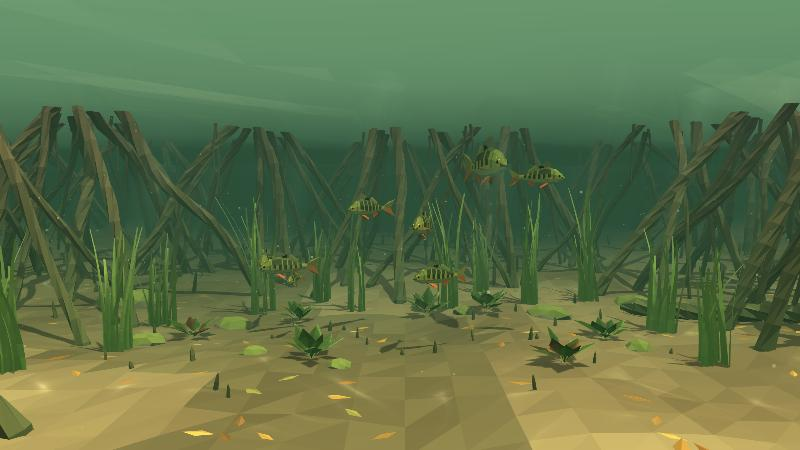
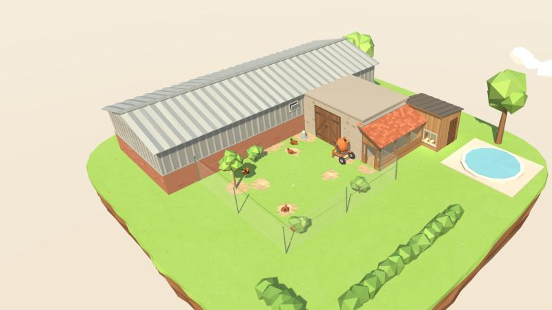
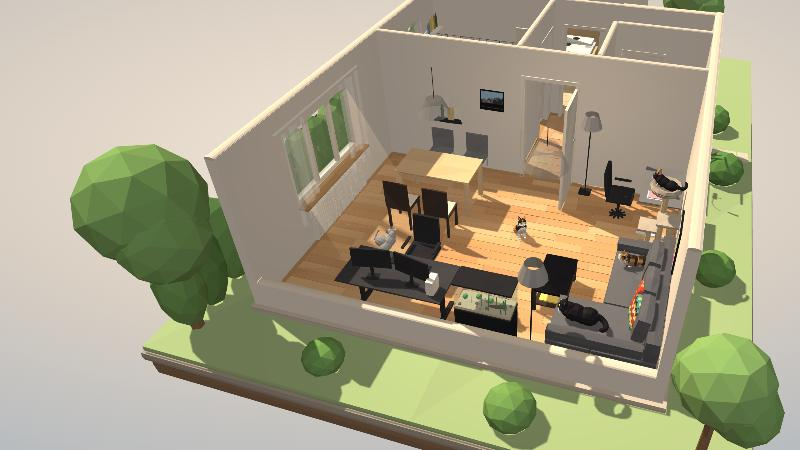

I build superconducting quantum sensors for dark-matter, neutrino and single-THz-photon detection.
I came to physics sideways. I started with a design-engineering apprenticeship at Pilatus Aircraft, working on the PC-24 business jet. I then spent six years as a design engineer and technician in the Quantum Device Lab (QuDev) at ETH Zürich, finishing high school in evening and weekend classes. After that came a BSc at ETH, with thesis work at the Paul Scherrer Institute in nuclear materials science, and at the University of Zürich in dark-matter physics and machine learning.
Research
Superconducting Quasiparticle Amplifying Transmons (SQUATs) are transmon-based sensors and my main research focus.
My work on SQUATs covers the full cycle: I design them with machine-learning algorithms I develop, simulate them, fabricate them in the Molecular Foundry nanofabrication facility at Lawrence Berkeley National Laboratory, and measure them in dilution refrigerators at millikelvin temperatures. On my own initiative I set up collaborations with NVIDIA and MIT, and I work with researchers at Stanford, WashU, Caltech and UW–Madison through DARPA QuSeN.
My main projects are the BREAD axion dark-matter search and reactor-neutrino detection for nuclear non-proliferation monitoring within the DARPA QuSeN program. I investigate new materials for low-Tc Josephson junctions, develop new kinds of superconducting qubit antennas and design high-density multiplexing schemes for superconducting qubits.
Selected projects
- 2024–2025
Machine-learning pulse-shape discrimination for germanium detectors
Gradient-boosted trees, twin neural networks and transformers for separating signal from background in HPGe detector waveforms. Published in Machine Learning: Science and Technology.
- 2021–2024
Drone mapping of the Lommiswil dinosaur tracksite
A 3D drone survey of a local tracksite that revealed more than 300 previously unknown dinosaur footprints. Published, awarded the Pro Argovia Prize, and covered by Swiss national television (SRF).
- 2019–2023
A 30-metre cryogenic link between two quantum computers
Final design, production drawings, commissioning, transport and quality control of 14 vacuum chambers with four-layer copper shielding and a 30-metre superconducting waveguide, operated at millikelvin temperatures. The link was used in the loophole-free Bell test with superconducting circuits (Nature 617, 265, 2023).
- 2022–2023
Hydran: detecting hydrides in nuclear fuel cladding
A machine-learning pipeline that detects and analyses hydrided regions in microscope images of fuel cladding; now a standard tool in PSI's Analytics of Radioactive Materials group for analysing ageing and decommissioned nuclear fuel rods.
Publications and posters
- M. Babicz et al., Transformer-based pulse shape discrimination in HPGe detectors with masked autoencoder pre-training, Machine Learning: Science and Technology 7, 045023, 2026.
- A. Fauquex, 3D drone mapping and analysis of the Lommiswil dinosaur tracksite, Mitteilungen der Aargauischen Naturforschenden Gesellschaft 40, 2024.
- A. Fauquex et al., Superconducting Quasiparticle Amplifying Transmons (SQUATs), poster, Quantum Device Workshop, UCLA, 2026. ★ Best Poster Award
- A. Fauquex et al., Enhancing pulse shape discrimination with gradient boosted decision trees and twin neural networks, poster, EuCAIF, Sardinia, 2025.
- A. Fauquex and R. Grabherr, Hydran: a machine learning software pipeline for the detection and analysis of hydrides in the cross-section of nuclear fuel cladding, poster, NuMat, Singapore, 2024.
- J. Schär et al., Extending cryogenic microwave quantum networks, APS March Meeting, 2021.
Awards
- 2026
Graduate Instrumentation Research Award (GIRA)
U.S. Department of Energy, through the APS Coordinating Panel for Advanced Detectors (CPAD) - 2026
Best Poster Award
Quantum Device Workshop, UCLA - 2021
Pro Argovia Prize
Best high-school thesis in the canton of Aargau
Education and experience
- 2025–
PhD in Physics
University of California, Berkeley - 2021–2024
BSc in Physics
ETH Zürich - 2019–2025
Laboratory technician and design engineer
Quantum Device Lab, ETH Zürich - 2018–2021
Federal Matura (high school)
Aargauische Maturitätsschule für Erwachsene (evening and weekend classes) - 2018–2019
Design engineer
Schonert SKH - 2013–2018
Design engineer, including a four-year apprenticeship
Pilatus Aircraft
Playground
Cool, nerdy little interactive projects of mine.
C. elegans connectome
A worm brain simulator: the complete wiring diagram of the nematode C. elegans, 302 neurons and about 5,700 connections between them and the muscles, runs live in your browser and drives a virtual worm that “thinks” it's alive.
Julia set of the day
A different Julia set every day. Zoom around, or dive in forever.
Stereogram generator
Turn an image, some text or today's Julia set into a magic-eye picture.
Quantum device toolbox
Useful calculators for superconducting quantum device work.


The Menagerie
As a kid I was fascinated by animals: my own pets, the ones at the zoo, and the ones I watched on live webcams and in video games. I even wanted to study biology to understand animal behaviour. I distinctly remember thinking that one day I would know my pets so well that I could write a program that simulated them perfectly. I never did study biology, or understand them quite that well, but I do have Claude now. So here are some little animations of my childhood pets. Some are no longer with us and some now live a 12-hour flight away, but here they all live on.

AquariumA bunch of Tanganyika cichlids, a hillstream loach, two gouramis, two fabulous rainbow-coloured rams and Shrimpy. Remember to feed them, or the big cichlid gets ideas.
ChickensHeinrich the rooster and his hens Edna, Ednis, Chicken #1, Chicken #2 and Chicken #3.
CatsLenny Sr., Lenny, Edna, Fläckli, Dolly and Frank, in Switzerland or America mode.
Games for lab breaks
For while the fridge cools down. Both are better with company: the flight simulator keeps a high-score board, and in the driving game you can race whoever else is online.
 Flight simulatorFor some reason, Pilatus decided to build aircraft in the middle of the Swiss mountains. Fly them (and a helicopter) between little airfields and get on the high-score board.
Flight simulatorFor some reason, Pilatus decided to build aircraft in the middle of the Swiss mountains. Fly them (and a helicopter) between little airfields and get on the high-score board. Driving simulatorA DB9-style grand tourer in an endless countryside. Other visitors show up as ghost cars, and anyone can start a race: a sprint, a long one, or 15 km of long range.
Driving simulatorA DB9-style grand tourer in an endless countryside. Other visitors show up as ghost cars, and anyone can start a race: a sprint, a long one, or 15 km of long range.